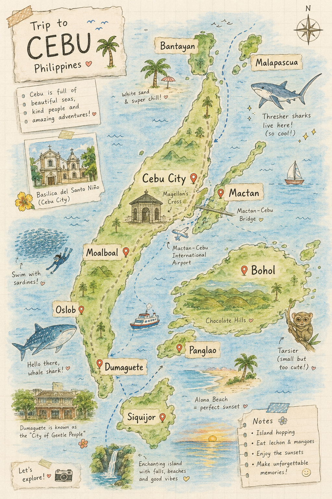

進教堂穿長褲/及膝裙
不穿無袖背心 Sleeveless 和短褲 Shorts

歷史古蹟烤乳豬夜市山景
跳島浮潛海鮮手工吉他
鯨鯊共游峽谷漂流沙丁魚風暴最高峰日出
巧克力山眼鏡猴世界級潛點Anda秘境
神秘療癒牛奶藍瀑布環島騎行
大學城Apo Island 海龜Silvanas 甜點
Bantayan 白沙長尾鯊Camotes 秘境
| 中文 | Cebuano 宿霧語 | 發音提示 |
|---|---|---|
| 早安 | Maayong buntag! | 馬阿用 蹦搭 |
| 午安 | Maayong hapon! | 馬阿用 哈朋 |
| 晚安 | Maayong gabii! | 馬阿用 嘎逼 |
| 你好嗎？ | Kumusta ka? | 哭穆斯打 卡 |
| 我很好 | Maayo man, salamat. | 馬阿用 曼 |
| 謝謝 | Salamat! | 撒拉嘛 |
| 非常感謝 | Salamat kaayo! | 撒拉嘛 卡阿用 |
| 不客氣 | Way sapayan. | 歪 撒巴岩 |
| 請 | Palihog | 巴里猴 |
| 是 / 不是 | Oo / Dili | 嗚嗚 / 滴力 |
| 對不起 | Pasayloa ko. | 巴撒以落阿 |
| 再見 | Babay! | 巴拜 |
| 你叫什麼名字？ | Unsa imong ngalan? | 溫撒 以夢 阿蘭 |
| 我的名字是… | Ako si… | 阿口 洗… |
| 數字 | Cebuano | 數字 | Cebuano |
|---|---|---|---|
| 1 | Usa | 6 | Unom |
| 2 | Duha | 7 | Pito |
| 3 | Tulo | 8 | Walo |
| 4 | Upat | 9 | Siyam |
| 5 | Lima | 10 | Napulo |
| 20 | Baynte | 50 | Singkwenta |
| 100 | Usa ka gatos | 1000 | Usa ka libo |